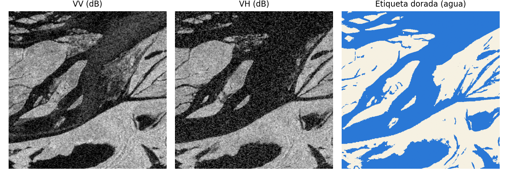

El problema y los datos
En una inundación, las nubes ciegan a los satélites ópticos. El radar de Sentinel-1 (VV + VH) las atraviesa, de día y de noche: el agua calma refleja la señal lejos del sensor y se ve oscura.
11
eventos de inundación (Sen1Floods11)
446
chips dorados: dibujados a mano por expertos
4,384
chips débiles: umbral de Otsu, sin humano
10 m
resolución; chips de 512×512 px
| Conjunto | Chips | Uso |
|---|
| Entrenamiento (dorados) | 252 | entrenar |
| Validación / test | 89 / 90 | elegir / medir |
| Bolivia (evento retenido) | 15 | región nueva |
| Débiles usados* | 1,000 | ablación |
| Lima 2017 (propia) | 19 | región Perú |
* Sin Bolivia ni ubicaciones de validación o test: sin fuga de información.

Chip de India (test): el agua se ve oscura en VV y VH; la etiqueta dorada la marca en azul.